Sample Path Analysis of Flow Processes
A Gentle Introduction
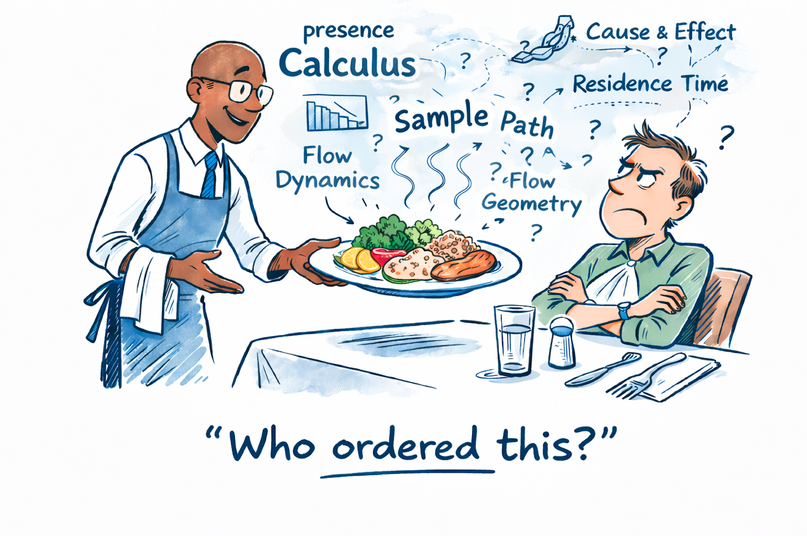
1 Introduction
Flow metrics and flow-analysis techniques have been used for operations management in the software industry for nearly 20 years. This lineage runs from the Poppendiecks [1], [2], who introduced lead time, throughput, and work in progress (WIP) to Lean software development, to David Anderson’s popularization of the Kanban method [3] as an empirical management approach for knowledge work. As Value Stream Management matured and flow-based improvement became embedded in DevOps and product organizations, a broader toolkit of metrics and analytical methods, including those popularized by Dan Vacanti [4], was adopted for operational management and forecasting.
Measuring and managing flow is now a well-understood baseline practice, even if adoption and execution vary widely. It may be surprising, then, that I argue we need substantially different ways to measure, model, and reason about flow in the software industry. This document and related work make that case.
The argument at a high level is this: our application of these ideas in software is built on an incomplete understanding of what the metrics measure, why they are relevant in our context, and how precisely they can support decisions across different contexts.
For example, it is widely accepted that throughput and process-time metrics such as lead time and cycle time are important performance measures in a delivery context. But in adapting them to software development, we often do not account for the economic context in which we measure them. Throughput alone does not always translate into meaningful economic outcomes. Process time in its various forms, and cost of delay, are often equally important economically, yet we still have few useful ways to connect those quantities to operational decision-making 1.
Further, Little’s Law shows that these concepts are not independent. It implies structural relationships between process time and throughput that manifest as economic trade-offs, constraining the courses of action available as we pursue specific outcomes.
While Little’s Law is widely name-checked to justify common practices, the throughlines between those practices and the underlying theory often rest on assumptions derived from their original application in manufacturing. There are software-development contexts where these assumptions are valid. For example, if you build and deliver software on a fixed-price contract basis, or your business model is based on marking up the specialized skills of your people, traditional economic models of throughput and resource utilization are often the right ones, and we can get direct leverage by adopting those ideas, as many careful practitioners do.
But if you are selling a SaaS product, product-development throughput is not nearly as important as careful selection of what goes into the product, understanding cost of delay, and optimizing delivery processes to stay responsive to shifting markets. Market performance depends on much more than delivering the right product. Time to market, network effects in the ecosystem in which the product operates, and related factors play a much larger role. So if we are focusing on product development in this context, we need tools that can incorporate these notions into our modeling assumptions before we design operational processes.
Between these poles lies a range of contexts — internal IT, sales operations, marketing, R&D — each with different economic drivers and different relationships between process time, throughput, and value. We cannot apply the same techniques to reason about these quantities and expect them to work equally well in all contexts.
Yet today, we mostly live in that awkward middle ground: we allude to these larger concerns when talking about process improvement, but our prescriptions and methodologies largely remain shackled to a limited set of generic ideas borrowed from industrial production: reduce WIP, remove waste, small batches, faster feedback, and so on. It’s not that these are not valid things to focus on, but they are treated as universal solutions, applicable without business context, with no reliable way to connect how and why adopting any of them improves business outcomes, and no systematic way to measure and prove they work in a given context.
Our first objective in this document is to shore up those foundations. Doing so reveals where current practices fit within the broader mathematical context provided by a rigorous theory of flow processes. It helps us understand where and when certain approaches are appropriate, and whether a particular improvement method is likely to be effective before implementation.
Such claims require proof: first, that a real limitation exists in prevailing methods; second, that the proposed alternatives resolve it. This document lays out that case at a high level. The broader project and documentation provide the mathematical foundation, derivations, and open-source tooling needed to validate these claims directly on your own data.
None of the core mathematical ideas we rely on to make this case are new. Many were established decades ago in queueing theory2. In particular, the sample path analysis techniques underlying this work trace to Shaler Stidham’s 1972 deterministic proof of Little’s Law and are mainstream complements to statistical and probabilistic analyses of stochastic processes, which is exactly how they are used here. Little’s Law is foundational to flow analysis, though in software delivery it is often invoked loosely, without exploiting its full structural implications. This is another key point of departure for our methods.
The theoretical foundation for our methods, which draws clear distinctions between concepts such as flow analysis, queue management, and economic analysis, is presented in Sample Path Analysis of Queueing Systems by El-Taha and Stidham [5]. Our contribution is practical: translating this theory into operational tools that can be applied directly to real software-delivery systems, and simplifying terminology where needed so it maps more clearly to the domain without losing rigor.
Applying these ideas requires conceptual shifts if you are very familiar with current methods. This document introduces those shifts and points to the theory and tooling needed to verify each claim. While the underlying mathematics is elementary, the perspective shift is significant and may be disorienting if you are comfortable with current techniques.
To make it easier to navigate these ideas, our toolkit is designed to work with exactly the same inputs you use to measure and analyze flow today. The results will differ, but we will explain why each difference matters. Rather than read this as an abstract theoretical treatise, I encourage you to compare our methods with the methods you use today and assess the claims side by side. While I claim that these are the correct ways to model and measure operational processes, you don’t have to take my word for it. Judge for yourself by connecting it to how you are doing this work today.
The Presence Calculus Project
While the current toolkit is focused on helping practitioners draw contrasts with existing methods, this work is part of the larger research program known as The Presence Calculus Project, developed over several years within my advisory practice, The Polaris Advisor Program. The Presence Calculus is a generalization of the methods discussed here, and it is where economic and operational reasoning are brought under the same mathematical umbrella.
Before we can talk about economic reasoning, we need to recast operational flow models so they can integrate with economic models. That is the focus of this document. The current toolkit reinterprets flow analysis using techniques from the Presence Calculus and strictly generalizes conventional flow-metric models. The Presence Calculus itself extends beyond flow analysis to a wider class of operational measurement problems, including economic decision-making.
The generalization is beyond the scope of this document. It is the subject of The Presence Calculus - A Gentle Introduction. While it stands alone, those ideas are easier to grasp if you first see how they manifest in familiar arrival-departure flow processes, which are the de facto model for operational flow analysis today.
2 Arrival-Departure Processes
All current flow-metric models are based on what we may call arrival-departure processes: discrete items arrive at a system or process boundary and depart after some time. Flow metrics measure key properties of this process: the average time between arrival and departure of individual items over a period (lead time, cycle time, and related variants, depending on boundary definition), arrival and departure rates over the same period (throughput), and the number of items in the system at a point in time (instantaneous WIP) or on average over a period (average WIP).
In general, measuring these quantities accurately requires careful attention to system boundaries, definitions of arrivals and departures, definition of WIP, units of time measurement (for both reported metrics and observation windows), and the exact formulas for the metrics being reported.
If metrics are meant to represent underlying process behavior accurately, these details matter considerably. Current techniques and tools vary widely in rigor. Serious treatments, such as Anderson’s work in the Kanban community and methods introduced by Dan Vacanti, pay much closer attention to these details than many ad hoc implementations that treat these numbers as reporting artifacts.
Even these stronger implementations, however, still face core methodological issues. In many cases, those issues are partially masked because the measurement techniques are paired with highly prescriptive methodologies that mitigate their impact. This makes the approaches fragile when used outside those methodological contexts, as they often are, and less suitable as general-purpose flow analysis techniques. This is particularly true when analyzing processes before those methodological changes are adopted and comparing them to the state after adoption — precisely when measuring the impact of process changes matters most.
Our methods aim to provide process-agnostic flow metrics derived from a formal definition of an arrival-departure process, robust under any realization that conforms to that model, even when underlying processes operate in volatile and changing environments.
In a sense, an arrival/departure process is to flow analysis what a single-celled organism is to biology. Simple enough to exhibit all the core principles involved, and rich enough to develop the full analytical machinery. We begin here because every structural property we need to study more complex configurations of these processes generalizes from this case. Understanding them well is the foundation of everything that follows.
2.1 Flow Process Model for Sample Path Analysis
The process model we use for sample path analysis is a bit different from the standard arrival-departure model above. It is strictly more general and has fewer assumptions, but the differences are also more fundamental than that.
Formally, the domain of analysis consists of processes described by a set of events that denote beginnings and endings we can observe in time. We continue to call these arrival and departure events to preserve continuity with existing practice, but the key difference is that we analyze the process primarily through the event definitions themselves.
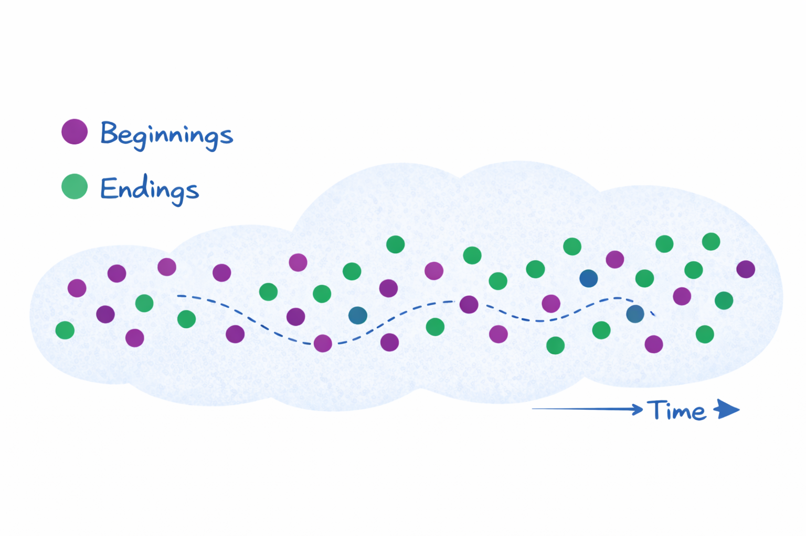
In particular, we do not require that the events in Figure 1 are associated with well-defined items, or that structural boundaries are fixed in advance. The only requirement is that, by observation, we can determine whether an event denotes a beginning or an ending. The primary unit of analysis in this ontology is the domain event. We also do not require explicit correspondence between arrivals and departures, for example by matching them through an item identifier.
This may be surprising, because you may wonder how we can measure concepts such as lead time, cycle time, WIP, and throughput if we cannot identify items. That is precisely a clue that the generalization here runs deeper than simply changing the names of what we call events.
To make this more intuitive, consider a record of births and deaths in a population. We can treat these as arrivals and departures. We are implicitly talking about people being born and dying, and we can measure population in units of people and lifespans in units of time, without needing explicit correspondence between a specific birth and a specific death, or a single integrated record of both.
This reveals something important about flow and flow metrics: these are gestalt properties of a process, not simply properties derived by aggregating the experience of individual items traversing that process. Many of the most useful aspects of reasoning about flow for process improvement do not require that level of detail. We can go a long way without ever talking about items 3.
In fact, this is a major source of mismatches in how flow is modeled and measured today. Most current methods measure flow in terms of statistical aggregates of item behavior: distributions of lead times, throughput, etc. We spend a great deal of effort discussing item size, granularity, and similarity. None of this is essential for defining the core structural properties that drive process behavior.
One key insight from sample path analysis is that the quantities needed to analyze the structural behavior of a flow process are determined entirely by the events. Once arrival and departure processes are defined, the core flow relationships follow from them, without requiring detailed knowledge of individual items. This not only clarifies what must be measured to reason about flow (event structure), it also provides a more general framework that applies even in domains where the notion of discrete items is less tangible.
2.2 What Is a Sample Path?
The term comes from probability theory. A non-deterministic process is one that can produce different outcomes under the same conditions. When this non-determinism is modeled using probability distributions, we call the process stochastic.
Consider a coin toss repeated at times \(t_0, t_1, t_2, \dots\) as in
Figure 2.
A single infinite sequence of outcomes
\[H, T, H, H, T, \dots\]
is one sample path of the process. It is one realized history. If we restart the experiment, we may obtain a different sequence.
- A deterministic process has exactly one sample path.
- A non-deterministic (stochastic) process has many possible sample paths.
There are two complementary views of the same process, as shown in Figure 2.
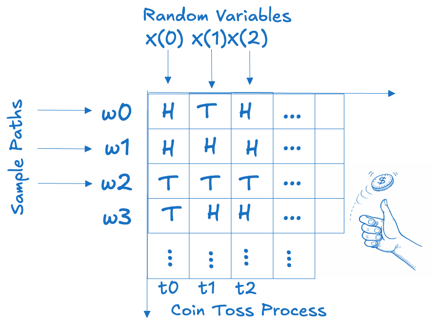
- Along a row (fixed \(\omega\)): a single realized sequence evolving over time. This is a sample path.
- Down a column (fixed \(t\)): outcomes across all possible sequences at one point in time. Each column defines a random variable \(X(t)\).
Probability theory studies properties that hold across
all sample paths via the random variables \(X(t)\).
For example: “The expected value of \(X(t)\) is 0.5,” across all sample
paths, if we encode Heads as 1 and Tails as 0.
Sample path analysis studies what is true within a single
realized path.
For example: “In this realized sequence up to time \(T\), the cumulative number of
heads is exactly 37.”
The latter statement is merely an empirical fact. By itself, it is not analytically interesting. The power of sample path analysis emerges when we study a class of processes and prove non-trivial structural properties that must hold along any sample path that satisfies certain observable conditions. Arrival-Departure processes are an example of such a class.
By definition, sample path analysis requires no distributional or probabilistic assumptions. Its statements are conditioned on a single realized history. This makes it especially useful in operational settings, where we observe only one trajectory and cannot fully characterize the underlying sources of non-determinism outside that observed history.
If additional modeling assumptions are available — for example, a known a priori probability distribution — those can be layered on top. But they are not required.
So the two approaches are complementary. Sample path analysis works under more limited informational constraints and therefore relies on more elementary, but structurally robust, techniques.
This is the perspective we exploit: structural properties of flow processes can be proven to hold along any sample path that satisfies verifiable conditions, without committing to probabilistic assumptions about the ensemble properties that hold across all sample paths. Since we generally don’t have a probability distribution to work with, we will call the underlying process non-deterministic rather than stochastic.
2.3 The Sample Path of a Flow Process
We begin by specifying how non-determinism enters the model. Imagine we are observing arrivals and departures over time. We record:
- The timestamp of the event.
- The type of event (arrival or departure).
We can think of this as a non-deterministic process on two random variables: the event type, which is analogous to a coin toss, and the elapsed time between events. The second random variable is recoverable from the timestamps and is a much richer object than the arrival/departure binary. Everything we think of as flow can be described in terms of the interactions of these two random variables.
Mathematically, this object is a marked point process: a sequence of timestamps, each carrying a mark. The minimal mark set here is {arrival, departure}. The timestamps determine the elapsed times between events. We may think of such a marked point process as a single sample path of an arrival/departure process whose broader non-deterministic structure may be unknown.
Figure 3 shows an example of an arrival/departure marked point process. This realized event history is the input to sample path analysis.
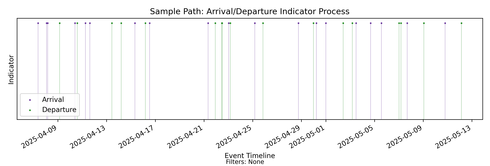
Any observed history of a non-deterministic process is a common finite prefix of some infinite set of sample paths. Once we fix that prefix, any further non-determinism lies in those possible futures4. Once a finite prefix has been observed, every quantity we compute from it is determined by that prefix.
In the case of the coin toss process, this can be visualized as in Figure 4.
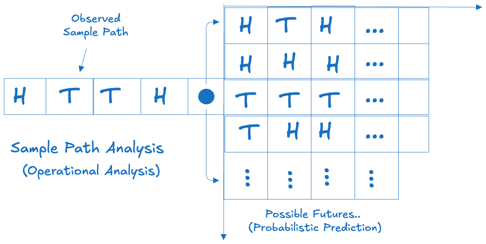
In the case of an arrival/departure process, we will show that if a finite prefix of some sample path is observed, all remaining flow metrics and empirical distributions derive from simple deterministic functions that measure properties of that observed path, much like the statement that the number of heads observed on the coin-toss sample path is 37.
Since the observed sample path in this case is a marked point process, this implies that the structure of flow is encoded directly in the realized event history. If the event history is captured accurately, the quantities we associate with flow can be read off mechanically from this history. In this context, non-determinism always lives in the future, and there is no need to invoke probabilistic or statistical assumptions or language when reasoning about observed flow. Specifically, the process of measuring flow does not introduce any non-determinism beyond what is already encoded in the observed sample path 5.
The machinery that makes this possible is what we call sample path analysis.
2.4 Where Distributions Matter
Probability and statistics still matter, especially when we are reasoning about possible futures in prediction models. But they are not the starting point.
In current industry practice, flow measurement and analysis focus on producing item-level empirical distributions of metrics such as lead time and throughput. These are useful. They help quantitatively describe and characterize customer experience, tail risk, service levels, and a whole host of other operationally useful metrics.
However, given the non-deterministic model above, there is no intrinsic non-determinism in those distributions beyond what is already encoded in the sample path of arrivals and departures. They are structurally constrained by the aggregate behavior of the underlying arrival and departure processes. Randomness in item-level flow metrics originates in randomness on the sample paths of the arrival/departure process. In that sense, treating these empirical distributions as first-class probabilistic or statistical constructs is fraught.
The primary quantities that govern how these distributions behave are the more primitive sample-path flow metrics we will develop. These are structural properties of the process, not aggregate properties of item-level behavior. They do not require item-level identification of arrivals and departures, nor do they require constructing distributions in order to reason about their properties.
If we want item-level distributions, we may extend the marked point process by explicitly pairing arrivals and departures with identifiers. Once that pairing is defined, the entire empirical distribution of item-level process times over a given sample-path prefix is determined by the realized event structure.
This establishes a hierarchy:
- Non-deterministic event structure.
- Structural flow metrics derived from that structure.
- Distributional summaries derived from explicit item pairing.
Making this hierarchy explicit distinguishes sample path analysis from current practice and changes how these secondary artifacts, such as empirical distributions, should be interpreted, particularly in forecasting.
This is not an intuitive shift, and some of the language and machinery we develop will be unfamiliar. The payoff is a set of techniques for reasoning about flow that do not depend on distributional assumptions, and whose core results hold unconditionally on every realized sample path.
The remainder of this document, and the supporting material on this site, develops the details.
3 Sample Path Analysis - Key Concepts
In this chapter we will cover the key concepts of sample path analysis of an arrival-departure process using the Presence Calculus. There are several ideas to absorb, even in this simple case, but the overall arc of the analysis that we describe here generalizes beyond this case to the general flow process models described in The Presence Calculus - A Gentle Introduction.
3.1 Computing sample path flow metrics
The previous chapters established that everything in our methods hinges on observing events on the sample path — in the case of flow processes, a marked point process — and analyzing the event structure as observations unfold along the time dimension.
A good mental model for how we compute these metrics is as follows 6:
- Starting from a fixed point in time, observe the sample path - the marked point process consisting of arrival and departure events - up to time \(T\).
- Compute a set of metrics that describe the state of the process up to that point in time. These are finite-window quantities that are closely related to many of the metrics we measure today, but they are not the same quantities, and the differences matter.
- Wait for the next event, record the event type, and extend the window by the elapsed time, giving an extended sample path that includes realized values of the next random element (timestamp and mark)7.
- Recompute all metrics deterministically from their previous values and the incremental contribution of the new variables.
The fact that every flow metric in this model can be computed this way is not obvious. We have traditionally treated these metrics as statistics, averages and percentiles of distributions of item level measurements. This has its uses but it does not let us reason reliably about cause and effect given a set of measurements on the process. This is what sample path analysis provides. Provably correct causal attribution makes sample path analysis a fundamentally different and more powerful analysis technique. It lets us trace changes in flow metrics back to the contributions of individual events on the timeline, and this, in turn, gives us tools to shape the event structure so metrics move in the direction we want. This principle is at the heart of why this technique is worth learning.
3.2 Processes and Indexes
In stochastic process theory, the word process has a specific meaning: it is a function that maps an index set to a set of states. Put more plainly, a process is something that has state, and whose state varies along some dimension — most commonly time. The definition is deliberately general, and it captures most things we informally call processes.
In an arrival–departure system, time is a natural indexing dimension. But what does process state mean in this context? There are many possibilities. Let’s consider one: the cumulative arrival count. At any point in time (the index) we record how many arrivals have occurred up to that moment (the state). If we observe that count at fixed reporting intervals — every minute, hour, or day — we obtain a process indexed by calendar time. For the sample path in Figure 3, this gives the processes in Figure 5.
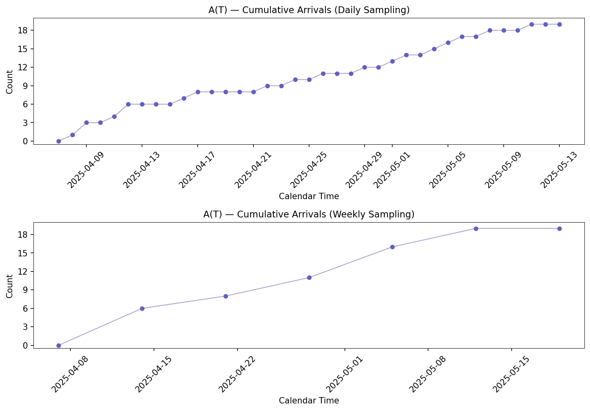
But this is not the only way to index the cumulative arrival count process. We can instead treat each arrival event as a state transition of the arrival-departure process. The cumulative count increases by one at each arrival and remains constant between arrivals. In this view, the arrival-departure process changes state when an arrival event occurs. We can index the cumulative arrival count process by these events, and then the index is no longer an arbitrary reporting schedule; it is the sequence of events that cause that state to change. This process is shown in Figure 6.
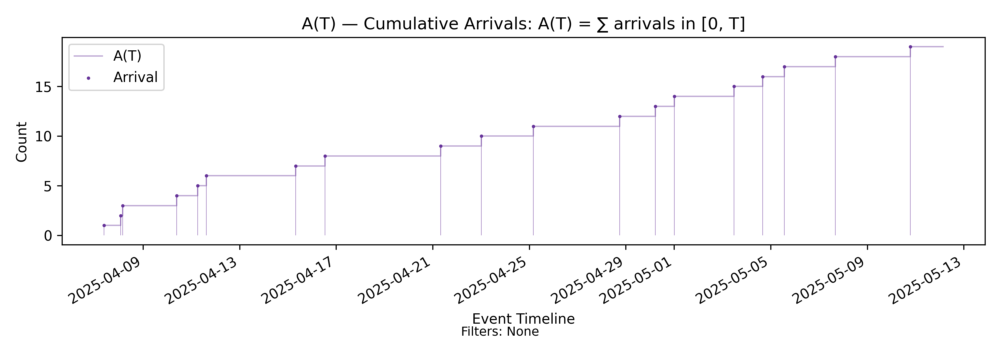
These two representations describe the evolution of a state of the same underlying arrival-departure process, but they are not equivalent.
Calendar indexing samples the state at chosen time points. It records values, but not necessarily the exact transition structure that produced them. Event indexing, by contrast, is built from the state transitions themselves. It records every state change and the order in which those changes occurred. It preserves the full evolution of the state changes at the resolution of events.
From the event-indexed representation of cumulative arrival count, we can always produce a calendar-indexed one for any given reporting frequency. The reverse is not true. Once we observe only sampled or aggregated calendar states, the underlying transition history is no longer recoverable. The information loss compounds when we derive new quantities by aggregating sampled values. This is a material difference.
Note, however, that in this example, the two representations agree on the values reported at the same time indexes. The information loss is not due to sampling error, but lies in recoverability of the underlying dynamics. The calendar-indexed view cannot say anything about what happens to the process in between samples. The event-indexed view can, unambiguously. In the current example, event-indexing is a measurement and modeling choice that preserves our ability to perform causal analysis on the observed behavior of the process.
Calendar indexing is the default way of reporting flow metrics today and this choice reduces the analytical power of the flow analysis techniques that follow. Flow metric calculations today begin by sampling the input for some reporting period and then performing various aggregations over the sampled values. In doing this we lose the structural connection between metric changes and the events that generated them. Metrics plotted over time become trend lines without a direct link back to the events that generate those trends. The choice of straight lines connecting the points in Figure 5 is not directly defensible, nor is any other interpolation for that matter. They become reporting artifacts.
By contrast, event indexing treats each flow metric as a dynamic process in its own right. The particular dynamics — how a metric behaves at events and between events — is part of the unique signature of that metric, and we can use it to reason about the metric’s evolution over time. The metrics are themselves deterministic processes over a sample path from a non-deterministic process and the plots are sample paths of these processes. The key difference in Figure 6 is that the shape of the sample path — in this case, a step chart that changes direction precisely at the event timestamps — follows from the definition of the metric. In Figure 5, no such inference can be made.
Specifically, the evolution of these sample paths follows predictable rules: events cause the trajectory of the path to change in predictable ways and in between events we can state how the path behaves deterministically. The only unpredictable element is what that next event is, and when it will change the trajectory of the path. As we will see, this is a much more tractable setup to reason about flow.
El-Taha & Stidham [5] use the term processes with imbedded point processes to describe this class of mathematical objects. We will use the friendlier term event-indexed processes to describe the same class instead. Each one of our sample path flow metrics is a deterministic event-indexed process over a sample path of a non-deterministic process.
Further, metrics interact when they are composed as mathematical functions. The dynamics of these composite processes can also be derived deterministically from the dynamics of the input processes. So both the mathematical definition of a process as a function over sample paths, and its dynamics play important roles in our ability to reason about flow using sample path flow metrics.
Unless otherwise stated, event-indexed processes are the default throughout. Calendar-indexed views will be introduced later, when we turn to reporting and aggregation over event-indexed metrics. The next section formalizes this shift from flow analysis as statistical inference over distributions to the study of deterministic dynamics along realized sample paths.
3.3 Flow Dynamics and Flow Geometry
In the last section, we defined a process as a mapping from an index set to a set of states. Dynamics specify the rules that govern how the states change: what the state variables are, what events or inputs affect them, and the update laws that map current state to the next state. We can analyze processes without knowing the dynamics, but precise reasoning about cause and effect becomes tractable once we have one in place.
In the next chapter we will use the machinery of event-indexed processes to specify the dynamics of the arrival–departure process: how arrivals, departures, and other exogenous inputs change process state, and how those changes update derived processes along the sample path. This allows us to say unambiguously: given a sample path and the current state, what caused the process to reach this state8.
Dynamics often have a direct geometric interpretation: the update rules define the admissible directions of motion of the sample path in state space. When projected onto a coordinate system on that space, the process can only move along trajectories consistent with rules governing the dynamics. Visualizing this process geometry gives insights into process behavior that might not be apparent even when we know the rules of process evolution.
But there is a deeper sense in which process geometry matters: the observed behavior of sample path trajectories is often constrained by structural rules and invariants, and these too have clear geometric interpretations in a suitably chosen coordinate system. In the case of arrival–departure processes, we will see that Little’s Law follows from such a structural invariant that constrains how derived processes such as arrival rates, throughput, and lead time evolve, and has a clean geometric interpretation. Geometry does not tell us what will happen next or why; it tells us what must be true, regardless of the causal mechanism. It encodes conservation laws, invariants, and deterministic relationships that bind sample paths and derived processes together.
In short, dynamics governs causal chains and loops. Geometry provides conservation laws and constraints. When we ask why a process is behaving a certain way, we need both perspectives.
We will develop the relationship between flow dynamics and geometry in arrival–departure processes carefully in the next two chapters. The results here are subtle and by no means obvious. Taken together, these give us a fully deterministic measurement substrate for reasoning about cause-effect mechanisms underpinning flow metrics.
3.4 Presence
The final concept we will introduce is Presence. In the arrival–departure process, events are primary. They are assumed as given. But when we speak of flow, what is it that we are managing? The Presence Calculus takes a specific philosophical stance. We call the underlying quantity presence. We define “flow management” as the measurement and management of cumulative presence. All the machinery we derive builds upon this premise.
For a quantity to qualify as a presence it must satisfy certain technical conditions, detailed further in [6]. Intuitively, it must be measurable at any point in time, and its accumulation must also be measurable over time by mathematical integration. This yields a quantity that we call cumulative presence. We treat that quantity as operationally significant, and it is this accumulation that we aim to manage when we speak of managing “flow.”
This stance is somewhat at odds with conventional interpretations of flow as the uninterrupted movement of items through a process measured using throughput, process time, etc. The Presence Calculus does not privilege any particular type of accumulation as desirable or undesirable. There is no a priori notion of “good” versus “bad” flow; those are context-specific interpretations of accumulation patterns.
Instead, the Presence Calculus provides uniform, process-agnostic techniques to model and measure the accumulation of presence and the tools needed to analyze its dynamics regardless of interpretation. The operational context then guides how these measurements are used to devise policies to manage accumulations and monitor them across different timescales 9 — maximizing desirable accumulations and minimizing undesirable ones.
Even in the simple case of arrival–departure processes there are many possible ways to define presence. For the minimal model we have so far — where we only observe event timestamps and markers indicating arrival or departure — the simplest definition is the imbalance between cumulative arrival counts and departure counts. In the next section we will show that arrival–departure imbalance satisfies the technical conditions.
In software delivery contexts, for example, imbalances between arrivals and departures are what we seek to minimize in order to improve the flow of work through the process. Cumulative presence in this context corresponds to delay. If those delays have costs, we may define a derived cost measure as a presence and measure accumulated costs as cumulative presence. We may seek to minimize this cumulative presence, even if the underlying flow of work is not smooth or uninterrupted as a result. This represents a distinct accumulation process that interacts with the underlying arrival–departure process.
By contrast, in customer retention processes we may seek to sustain this imbalance — where cumulative presence represents customer retention and the economic rewards it brings 10. These broader generalizations are beyond the scope of this document, but are covered more systematically in [6].
In this document we will dive deep into one such definition of presence (arrival–departure imbalance) and its interpretation in one of the simplest possible arrival–departure processes. Even in this minimal case, measuring cumulative presence provides a unifying concept for reasoning about flow and flow metrics, their dynamics and geometry, and related notions such as stability and equilibrium. It consolidates most of our existing flow management concepts under a single theoretical umbrella and sets the direction for extending these ideas to reason about operational and economic concerns.
With this as preamble, let’s dig in and start connecting the dots to define the dynamics and geometry of arrival–departure processes using sample path analysis and the Presence Calculus.
4 Presence Accumulation
We’ve already introduced the imbalance between cumulative arrival and departure counts as the quantity whose accumulation is the focus of measurement of flow in an arrival-departure process.
The chain of processes that model both the short-run and long-run dynamics of presence accumulation in such a process is shown in Figure 7 below. The formal way to specify process dynamics is as a system of difference or differential equations, and this is possible here as well. But we are more interested in explaining the underlying concepts intuitively, so we will opt for simpler language except where it is essential for precision and clarity. The metrics reference has a more technical treatment with precise mathematical definitions of the concepts involved.
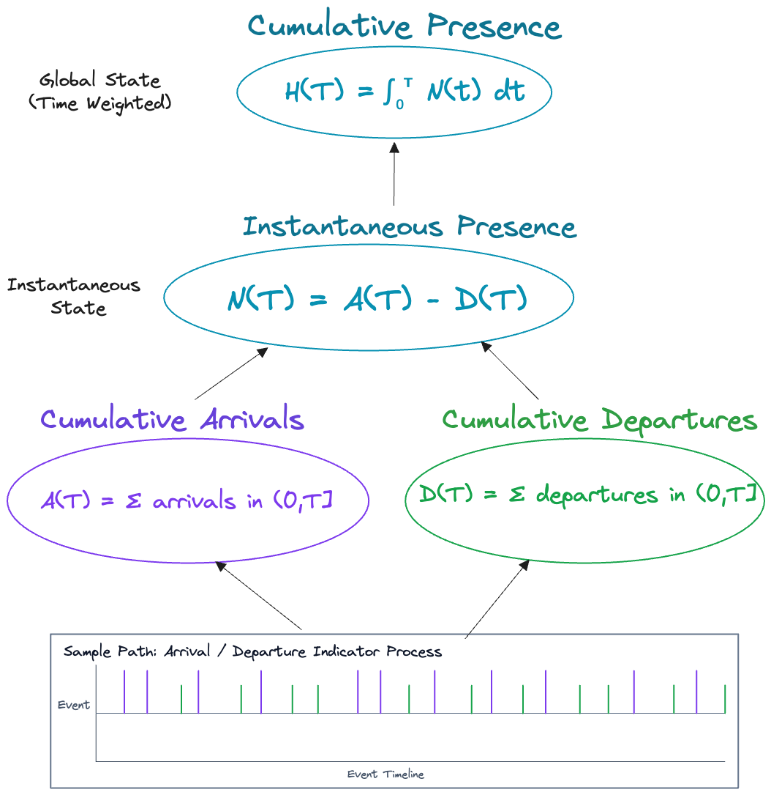
In Figure 7 each oval represents a measurement that models a specific aspect of presence accumulation. Each of these measurements is a process under our definitions. Each process depends on one or more input processes, and the dynamics specify how these processes change over time. The key property that we will derive here is that changes in every process are traceable back to the events on the sample path. This is not true of every dynamic model, but it is possible because of the specific definition of presence and event-indexed representation we have adopted here.
Let’s go through the individual processes briefly in order, starting with cumulative arrival count and cumulative departure count — the ones that are directly calculated from the sample path.
Cumulative Arrival Count — \(A(T)\): We’ve already seen this one. It counts the number of arrivals observed in a time interval \(T\).
Dynamics: \(A(T)\) increases by 1 with every arrival and remains unchanged on departure events, and in between events.
Cumulative Departure Count — \(D(T)\): The departure process counterpart.
Dynamics: It increases by 1 with every departure and remains unchanged otherwise.
Instantaneous Presence — \(N(t) = A(T) - D(T)\): This is the imbalance between cumulative arrival and departure counts at an instant. We call this the instantaneous presence.
Since \(A(T)\) and \(D(T)\) represent cumulative states of the arrival-departure process, \(N(t)\) encodes a higher-order state representing the imbalance between the two cumulative counts. Think of \(N(t)\) as instantaneous WIP as you connect it to the familiar flow metrics.11
Dynamics: The value of \(N(t)\) increases by 1 with every arrival, decreases by 1 with every departure, and remains constant in between.
Cumulative Presence — \(H(T)=\int_0^T N(t)\,dt\): This is accumulated presence over the interval \((0,T]\). It is calculated by taking the definite integral of the instantaneous state over time. This is a global state of the process that carries with it the entire history of the state transitions, weighted by the time the process has spent in each state. While this looks a bit abstract right now, we will see from the geometric interpretation below that this is actually a very straightforward concept to work with.
Dynamics: \(H(T)\) does not jump at arrivals or departures. Arrivals/departures change \(N(t)\), which changes the slope of \(H(T)\). Between events, \(H(T)\) is linear with slope equal to the current \(N(t)\) (flat when \(N(t)=0\)).
In the table below, we summarize the dynamics model.
| Metric | Derivation Formula | On arrival | On departure | Between events |
|---|---|---|---|---|
| \(A(T)\) | \(A(T)=\sum \text{ arrivals in }(0,T]\) | +1 | Unchanged | Constant. |
| \(D(T)\) | \(D(T)=\sum \text{ departures in }(0,T]\) | Unchanged | +1 | Constant. |
| \(N(T)\) | \(N(T)=A(T)-D(T)\) | +1 | −1 | Constant. |
| \(H(T)\) | \(H(T)=\int_0^T N(t)\,dt\) | Unchanged | Unchanged | Increases linearly, with slope \(N\). |
4.1 Interpreting the Dynamics
We can think of this chain as encoding memory about process behavior across different timescales.
- Events are instantaneous and discrete and, taken individually, carry no memory.
- Cumulative counts remember how many events have occurred, but not what happened between them. From an observer’s perspective, cumulative arrival and departure counts evolve as distinct processes; the basic arrival–departure representation does not, by itself, encode the interaction between them.
- Presence is the quantity that explicitly models that interaction. Instantaneous presence models the instantaneous imbalance between arrival and departure counts as a process state that evolves over time. At this point we have the basic machinery we need to talk about state transitions of the arrival–departure process as a whole.
- Cumulative presence encodes time-weighted presence in a given state — this is what the integral in \(H(T)\) does. In the underlying arrival–departure model, the time between events determines how long the process remains in a state. At each event, arrival or departure, the process changes state, and in between events, it stays in the same state. We can think of this as the global flow state of the process that encodes state along two dimensions — the imbalance in cumulative counts and how long that imbalance persists.
\(H(T)\) and the chain of processes that produce it are the fundamental flow metrics on which all our existing flow metrics depend. Everything we normally think of and measure as flow metrics — throughput, process time, occupancy metrics, costs — can be derived deterministically from this chain. What constrains those derivations is the subject of the next section.
The rules by which each of these processes evolve are completely determined by the dynamics of the underlying arrival–departure process, and these in turn are specified by the event type and time between events in the observed sample path. So we now have a clean causal chain that explains precisely how the global state of the process evolves from its instantaneous states.
4.2 The Geometric Interpretation
The Presence Calculus and sample path analysis give a mathematically rigorous and principled approach to reasoning about flow geometry and clearly show how flow dynamics are governed by mathematical constraints that are best understood in geometric terms.
To motivate what “geometry” means in the context of presence accumulation, let’s take the familiar example of the Cumulative Flow Diagram. The CFD is one of the most commonly used visual tools to reason about flow, and the intuitions we gain from the visualization are almost entirely geometric. We make inferences about flow by looking at the distances between lines on a diagram, infer stability by looking at when arrival and departure lines become parallel, look at the shapes and bulges in the CFD to recognize bottlenecks, etc.
But very little of this intuition is directly backed by rigorous mathematical reasoning, and in fact many of the common “rules” for reading the visual cues on the CFD (for example in [4]) and guidance from flow metrics vendors today rely on assumptions and somewhat loose definitions of terms that don’t always hold true for all arrival-departure processes. While a CFD is a useful tool for reasoning about stable processes, it quickly becomes unwieldy as a general-purpose tool for reasoning about flow in more general cases.
Our treatment below resolves these ambiguities and gives a set of mathematically sound tools to reason about flow geometrically with a broader set of visual tools that go beyond the simple CFD. We will start, however, with the CFD and map the metrics that govern dynamics onto the CFD. This will then let us pivot to additional visual tools that help us reason about flow geometry in a general arrival-departure process.
The Cumulative Flow Diagram
The standard way of drawing a cumulative flow diagram (CFD) is to plot the cumulative arrival count \(A(T)\) and the cumulative departure count \(D(T)\) on the same set of axes and look at geometric properties of the resulting paths in a two-dimensional space, with time on the x-axis and cumulative counts on the y-axis. The goal is to make reliable inferences about the behavior of the process from the geometry induced by the two paths in the two-dimensional space.
Given our definitions of \(A(T)\) and \(D(T)\), the standard CFD is shown in Figure 8.
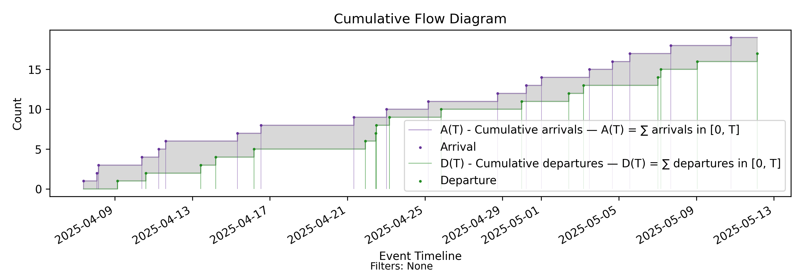
We’ll note a few points here:
- The CFD is constructed using the event-indexed representation of the two paths.
- The geometry of the paths correctly reflects the dynamics of the processes as we derived it in the last section. Each is a step function that changes only at the event timestamps, which are clearly marked in the diagram.
- Every point on each path represents the true values of \(A(T)\) and \(D(T)\), and this holds both at and between the timestamps of the indexing events.
- The vertical distance between the two paths at any time \(t\) gives the value of \(N(t)\).
- The shaded area between the curves over a time interval \([0,T)\) gives the value of \(H(T)\).
Note that the last two properties follow directly from the definitions of the metrics and the fact that the path geometry of \(A(T)\) and \(D(T)\) reflects the true values of these metrics.
By contrast, consider the standard construction of the CFD from calendar-indexed paths which is used in every existing flow metrics tool today. This is shown in Figure 9 using daily and weekly sampling for the same underlying sample path from which we constructed Figure 8.
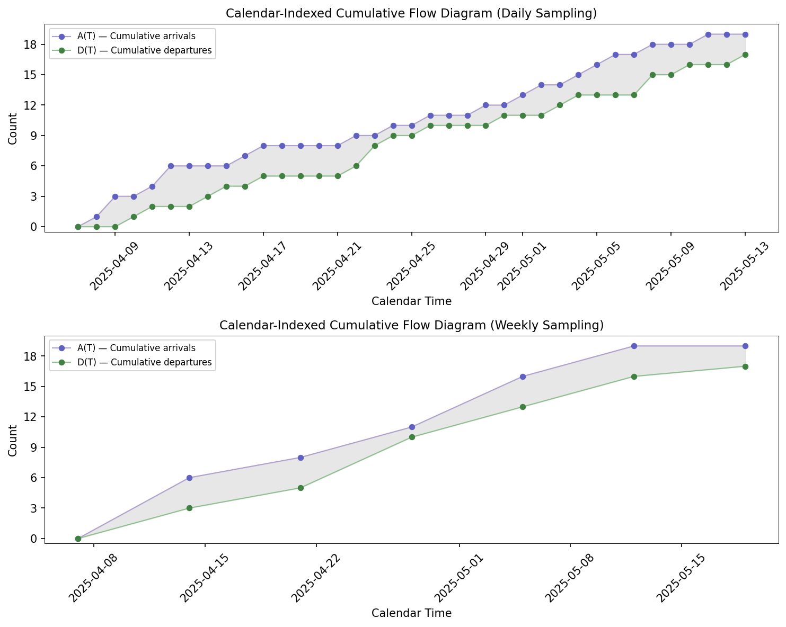
Because the calendar-indexed CFD is constructed from point samples of the cumulative arrival and departure counts, the path geometry of the CFD no longer reflects the true values of the metrics except at the sampling points. Between sampling points, the visual representation is an interpolation of the underlying step functions rather than the true sample-path geometry. As a result, it cannot be used for exact geometric reasoning about the metrics or their relationships at intermediate times. The telling sign is that the shapes of the paths are not step functions: the slopes between sampling points reflect interpolation, not actual process dynamics.
We can still use this representation to get rough visual cues about flow patterns, but unlike the event-indexed CFD it does not preserve exact geometric interpretations of quantities such as instantaneous presence (vertical distance) or cumulative presence (area) except at the indexed calendar points. Even simple conclusions like using the vertical distance between the paths as a proxy for WIP become approximations once we measure outside the sampled times.
The charts we develop using sample path flow metrics with event-indexed representations do not suffer from this defect. Every one of the visualizations we develop has an exact geometric interpretation: the visual representation aligns with the actual behavior of the underlying functions, and we can read off important aspects of process dynamics from the lengths, areas, slopes, and distances of the paths in each chart.
Flow geometry thus becomes more than a visualization artifact. Extending beyond the simple visual cues in the CFD, it gives us a way to turn the mathematical expressions that define the dynamics and constraints into visual tools that preserve the mathematical meaning of the metrics in their geometric interpretation.
This becomes particularly important as we move beyond \(N(t)\) and \(H(T)\) and consider time-normalized metrics such as moving averages (\(L(T)\)), arrival and departure rates, and process times. Contrary to common practice, these cannot in general be read directly from the CFD geometry without imposing strong assumptions about the underlying arrival–departure process (for example, piecewise stationarity, uniform event spacing, or strict arrival/departure ordering). To represent their exact geometric relationships, we require visualizations that extend beyond a simple two-dimensional projection of the input counting processes.
Let’s begin by charting the paths for \(N(t)\), \(H(T)\), and \(L(T)\). These allow us to visualize the interplay between flow dynamics and flow geometry much more clearly than the CFD.
4.3 The Geometry of \(N(t)\)

Figure 10 shows the event-indexed path geometry of \(N(t)\), illustrating that it increments by 1 at arrivals, decrements by 1 at departures, and stays constant in between.
Equally important, this visualization clearly shows the relationship between \(N(t)\) and \(H(T)\). The height of each rectangle between events represents a state, and the width represents the time the process has spent in that state. The area under the \(N(t)\) curve, obtained by summing the areas of these rectangles, is precisely what we calculate as \(H(T)\). This is the same area represented under the CFD in Figure 8.
4.4 The Geometry of \(H(T)\)
Each rectangle contributes an area proportional to the time spent in that state, which is why we call cumulative presence the time-weighted sum of instantaneous presence. Figure 11 shows the event-indexed path geometry of this quantity.
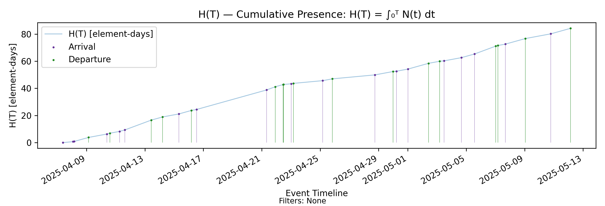
This path visualizes the salient dynamics of \(H(T)\): arrival and departure events change the trajectory of the path by changing the rate at which presence accumulates, which translates geometrically to the slope of the line between events. The slope increases by 1 at each arrival and decreases by 1 at each departure. In between events, the slope of the line is exactly the value of \(N(t)\) at that point in time.
\(N(t)\) and \(H(T)\) decompose the two-dimensional geometry of the CFD into its component parts in a way that makes it easier to reason visually about the impact of instantaneous and global state on the behavior of the underlying arrival–departure process.
5 Flow Metrics and Little’s Law
We now turn to the presence calculus analogues of the familiar flow metrics such as throughput, cycle time, and average WIP. These give us ways to talk about rates, durations, levels, and other key process characteristics we measure when reasoning about flow.
Since we spoke of “presence-calculus analogues”, it is worth discussing why there might be a difference between these and the “industry-standard” definitions of these terms. The key difference is that the industry-standard approach measures properties of items, treating flow metrics as aggregates of item-level measurements. The presence calculus instead derives quantities such as throughput and process time as time-normalized factorizations of cumulative presence \(H(T)\).
In the standard approach, for example, we report throughput by picking a reporting interval, counting the number of items that departed in that period, and dividing it by the length of the interval. Over that same interval we measure the time between arrival and departure of each item that departed and divide it by the number of departures to compute the average time in the process, variously called lead time, cycle time, or process time depending on the definition of the arrival and departure boundaries. We then use distributional properties—averages, percentiles, and related statistics—of these item-level values to measure flow.
These measurements are useful data points for reporting purposes, but they do not let you reason directly about why those numbers are the way they are. You could take one set of measurements and then take another one a few minutes later and obtain a completely different set of numbers depending on which items happened to complete in between the two measurements. You could note that fact, but those observations alone do not reveal the underlying process dynamics that produced those results.
By contrast, the chain of processes in Figure 7 that lead to \(H(T)\) measure a much more fundamental process property: presence accumulation. This assumes no knowledge of items. Since all we have available in the input sample path are arrival and departure timestamps, we could not calculate item-level statistics even if we wanted to 12. We’ll maintain this posture as we derive the presence calculus analogues of the standard flow metrics.
Further, cumulative presence is measured and monitored on a real timescale. The key new element we introduce with flow metrics is time normalization. Rates, process times, and similar quantities are derived as time-normalized factorizations of cumulative presence, measured consistently over a common observation interval. Several geometric constraints fall out as an unavoidable consequence of this factorization, and they can be viewed as finite versions of Little’s Law over the observation interval. We will call this the Presence Invariant to highlight the fact that cumulative presence is indeed the fundamental property we must measure when reasoning about flow using flow metrics.
This approach gives us an unambiguous basis to derive process-level flow metrics that capture both the short-run and long-run dynamics of presence accumulation—the fundamental process characteristic we are measuring. The metrics themselves have precisely defined dynamics similar to those we developed for the core presence accumulation quantities. When we observe a change in any of these metrics, we can explain exactly why they changed and trace them back to the events that produced those changes. This is the fundamental advantage we gain by taking this approach.
Best of all, when item-level correspondence between arrivals and departures is available, the traditional metrics can be recovered directly. Moreover, we have mathematically provable relationships between these process-level flow metrics and the familiar item-level flow metrics.
All in all, the measurement techniques we show below are a drop-in expansion of the flow metrics toolkit we have today. When item-level information is available, we can compute the familiar statistics as before for reporting purposes. When it is not, we still retain a rigorous basis for reasoning about rates and process times purely in terms of the process-level factors that determine flow.
5.1 \(L(T)\) — Time Average of Presence
Recall that cumulative presence is defined as
\[ H(T) = \int_0^T N(t)\,dt \]
The time average of instantaneous presence over the interval \([0,T)\) is
\[ L(T) = \frac{H(T)}{T} = \frac{1}{T} \int_0^T N(t)\,dt \]
\(L(T)\) is the time-normalized accumulation of instantaneous presence \(N(t)\), i.e. the average level of instantaneous presence during the observation window \([0,T)\). Checking units helps clarify the interpretation. Suppose the units of \(N(t)\) are measured in elements. Then \(H(T)\) is measured in element-time, while the units of \(L(T)\) are elements. This is why we call \(L(T)\) the time average of instantaneous presence.
For the \(H(T)\) chart in Figure 11, the corresponding chart for \(L(T)\) is shown in Figure 12 below.
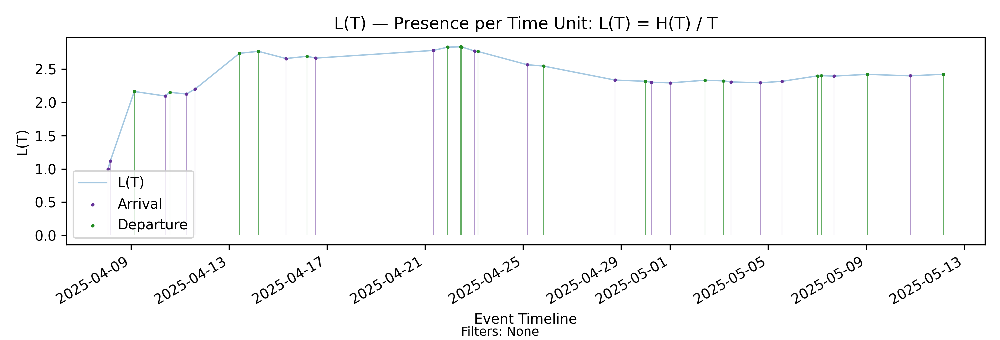
Technically, \(L(T)\) is a half-open moving average of instantaneous presence: the left endpoint is fixed and the right endpoint varies continuously. Its numerator is driven by instantaneous imbalance in arrival–departure counts, while its denominator introduces time normalization.
Recall that \(H(T)\) encodes the time-weighted history of instantaneous presence of the process: its value represents the sum of the values of the instantaneous presence \(N(t)\), weighted by the amount of time the process spent in each state. Time normalization therefore de-emphasizes transients (components of \(H(T)\) where process states were held for short periods) and emphasizes persistent states (states that persist or that the process returns to repeatedly over its history).
The dynamics of \(L(T)\) follow a simple pattern. It is continuous at event times (there are no jumps). Between events it moves toward the current value of \(N(t)\): it rises when \(N(t) > L(T)\) and falls when \(N(t) < L(T)\). Its responsiveness decays over time (roughly at rate \(1/T\)) 13. As a result, transient states are smoothed while persistent states are emphasized. This is the signature of a moving average.
Since the denominator is constantly increasing, the moving average tends to stabilize provided the process remains bounded within a finite set of states — that is, the instantaneous presence remains bounded and the time spent in states does not grow proportionally with the observation interval.
On the other hand, if cumulative presence grows proportionally with the observation interval — for example because the process spends increasing amounts of time in higher presence states — the value of \(L(T)\) also grows without bound and the process is unstable.
The stabilization of \(L(T)\) is one marker of a stable arrival–departure process, and for this reason \(L(T)\) is one of the most important operational flow metrics.
We will have much more to say about the behavior of \(L(T)\) as a key stability diagnostic for arrival–departure processes.
5.2 The Presence Invariant
Time normalization
6 References
WSJF job scheduling is, of course, one of the “standard” answers here, but it is a relatively crude heuristic and only a minor application of a deeper and more nuanced topic.↩︎
Much of traditional queueing theory cannot be applied as-is in the environments where software development happens, yet those distinctions are often poorly understood. As we will see, several more foundational ideas need to be established before we tackle queueing directly. Once those are in place, a rigorous foundation for managing operational queues emerges naturally.↩︎
That said, there are implicit conservation assumptions. The elements that arrive are the ones that depart; we do not create departures from nothing, nor do elements disappear without departure if they have arrived. The underlying conservation laws are what determine what we perceive as flow, but they can be stated without requiring an explicit pairing between individual arrivals and departures. To avoid item-centric connotations, we use the term elements to denote the units of a countable, conserved set that provides the basis for counting beginning and ending events. Quantities like WIP and throughput are defined from the resulting counting processes, not from any particular identity or pairing of elements, provided the conservation assumptions are satisfied.↩︎
There is an implicit qualifier in this claim: we are assuming that the non-determinism we care about in our model is confined to the random variables under analysis. There are, of course, many other potential sources of non-determinism even in a single arrival/departure process, including measurement errors.↩︎
Ensuring this means paying careful attention to the impact of techniques such as sampling on flow measurement. This is a key point of departure in our methods as well.↩︎
Even though this is not the way the underlying algorithms are necessarily implemented in the toolkit.↩︎
At each step we are observing the realized value of the next random element in some underlying non-deterministic process. Conditioned on the observed prefix, the structural flow quantities defined over that prefix are deterministic functionals of the prefix. This is what we mean when we say “randomness lives in the future.”↩︎
The type of causal reasoning we do here should not be confused with root cause analysis. The causal links here are between measurements over a sample path and the events on the sample path. The events themselves come from arrival–departure processes that we treat as a black box. The causal model establishes a proximate causal chain that starts with the events and ends with the measurements. We cannot reason about cause-and-effect relationships beyond this without additional information. The key point, though, is that the simple arrival–departure model can be refined and composed to build more sophisticated models of larger systems. Additional information and context can be added to aid analysis. The machinery here is a reliable building block for rigorous causal analysis of processes in larger systems. Those applications are not in the scope of what we will describe here. The focus is on precisely defining the proximate causal relationships between flow metrics and events on the sample path.↩︎
This is fundamentally a generalization of the intuitive notion of “managing flow by managing WIP.” The point of departure is that the Presence Calculus focuses attention on managing the accumulation of WIP rather than controlling the WIP level as the primary operational lever. It shifts attention from managing items to managing the process in which the items flow.↩︎
In a larger systems analysis context, presence is a unifying abstraction that lets us reason deterministically about proximate cause-and-effect relationships between operational behavior and economic outcomes. Many operational decisions can be viewed as managing accumulations of different kinds of presence within the system. Some need to be minimized; others need to be sustained and maximized. These accumulations must be managed consistently across different timescales using the modeling and measurement machinery of the Presence Calculus. It provides a unifying set of concepts and a consistent vocabulary for reasoning about operationally distinct quantities with different semantics operating on different time scales.↩︎
The reason we don’t define it as such is that WIP is a specific interpretation that applies to specific domains. A more general concept here might be occupancy, but even this requires specific assumptions that are not necessary to reason about flow, so we will stick with the least restrictive definition of \(N(t)\) as imbalance. Further, both WIP and occupancy are a type of presence, but not all presence is of this type. That is the key thing to remember.↩︎
In practice, operational transaction logs typically do contain item-level identifiers, making it easy to compute these statistics when needed. The point of the construction here is methodological: by assuming we do not have item-level correspondence, we are forced to define quantities such as throughput and process time purely at the process level, independent of any particular notion of items. This gives us rigorous tools to measure and reason about changes in the process independently of the behavior of item-level distributions. As we will see, these item-level distributions are fully determined by the underlying process-level factorizations. If the goal is to measure the impact of process changes and improvements, the presence calculus takes the position that these process-level constructs are the primary quantities we should measure and manage.↩︎
These dynamics can be derived from the relationship \[ \frac{dL(T)}{dT} = \frac{N(T) - L(T)}{T}. \] This follows directly from differentiating \(L(T)=H(T)/T\) using the quotient rule and the fact that \(\frac{dH(T)}{dT}=N(T)\). The expression is the classical sensitivity formula for a moving average, from which the qualitative dynamics above follow. The complete derivation of this formula is given in Appendix A of the Metrics Reference.↩︎